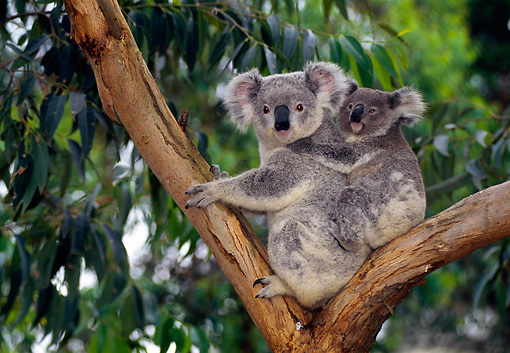

General Synopsis

Koala's are terribly cute. They are a classed as a herbivoriousMarsupial. In and around souther Austrailia. They mostly eat Eucalyptus leaves and sleep about 20 hours a day. Typical to marsupials, they carry thier young in a pouch just like Kangaroos.
Habitat
While koalas currently aren’t listed as an endangered species, 80 percent of koala habitat has been lost to human homes and businesses, drought, and fires. That makes life hard for an animal that needs eucalyptus forests to survive, like koalas do. Koalas also are at risk when close to human populations and being killed by cars or dogs. Many people are working together to protect koala habitat and help these cuddly looking creatures survive.